Guide to the Seekers of the Malediction, Part Two: Multifaction Seekers
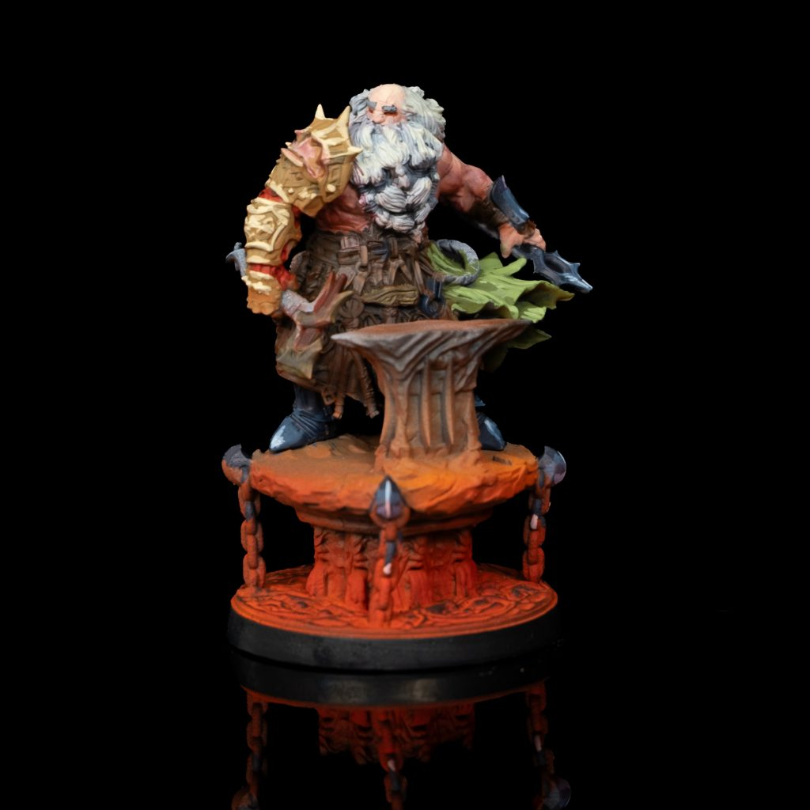
Auric Evenhand - Painted by Mike Bettle-ShafferAuric Everhand - Order of the Shattered Throne & Primal Blood
Auric was a trader like his ancestors, but was ushered into conflict when his caravan was raided by the Primal Blood. His father fought the assailants off wielding a Legacy in doing so - to the shock of all present. This Legacy was the Will of the Forge, and it allowed Auric’s father, Ulfrith, to fight in defense of his people worthy of tales to be sung of the moment. Sadly, Ulfrith perished, and it left Auric to be saved by forces from New Osterath, which are a part of the Order of the Shattered Throne.
Auric honed himself within the order, and learnt more about his legacy that can only be wielded by a royal bloodline, his bloodline. But the artifact was incomplete. He worked to carve a legend for himself, replacing his own arm with that of a metallic one once a part of the last king of the land. He cut down warlords of the land and brought them into the fold reluctantly due to his disdain for the Primal Blood. Auric believes the future of his people is with the Order, and he must be the one to forge it.
The Will of the Forge is a Legacy that has the soul of the most skilled artisan infused with it. Aurus, the king of the Vulkir, was adjoined to the artifact so he could provide his wisdom to his people for generations to come. The artifact is in two pieces. The hammer, which can shatter magical artifacts and extract the power hidden inside. The second part is the Caldera’s Fist, an iron arm that is to replace a Seeker’s own. Using these two parts together, you can reshape the artifacts the hammer destroys anew. The Will of the Forge bonds to those that have the Vulkir people at heart, no matter the methods.
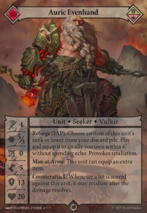
Auric Evenhand Rules - Loot Studios Auric’s Rules - Auric has decent stats that will make him tough to kill, although his defence is quite low. This should be something boosted with attachment cards in which Auric can have two attached to him instead of the usual one. He also likes to be in combat since he can take a swing when an enemy scores a hit on him with Counterattack. His main ability costs two action points and allows him to Reforge a discarded item by placing it on a unit within 6” of himself without spending echo to do so. A force led by Auric, is all about getting the most out of item cards, thus improving the quality of your forces.Will of the Forge - Just like Auric, this Legacy is all about items. Whenever you play an item you draw a card, and whenever an item is destroyed you gain echo equal to its cost. This is very strong and makes playing items almost a free experience. Why wouldn’t you want to improve your forces for basically nothing? But you can also utilise items for more than enhancing. Whenever an attack is happening, you can destroy an item equipped to either resist two damage, or deal a further two damage.
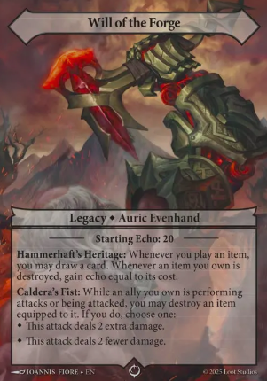
Will of the Forge Rules - Loot StudiosUnique Cards - Auric can bring the forces of the Order of the Shattered Throne, and members of the Primal Blood that have been converted to the order, all into one force. He also brings a few cards that only he can wield in the likes of the Twinblade Skirmishers or some spells based on items.
Useful Cards - Astaris Battlemasters will work well in an Auric deck since they share the same ability that allows them to have two items attracted instead of the usual one. There are also a few spells that revolve around items like Barter which can help you search for an item, Answer the Call which lets you deploy a unit immediately, as well as Decree of Valcaris which allows you to switch a non-Seeker ally in play with one in your hand of the same rank with the attached items.If you want to explore crafting the ultimate forces of the Shattered Throne, with the assistance of converted Primal Blood, then seek out Auric Everhand.
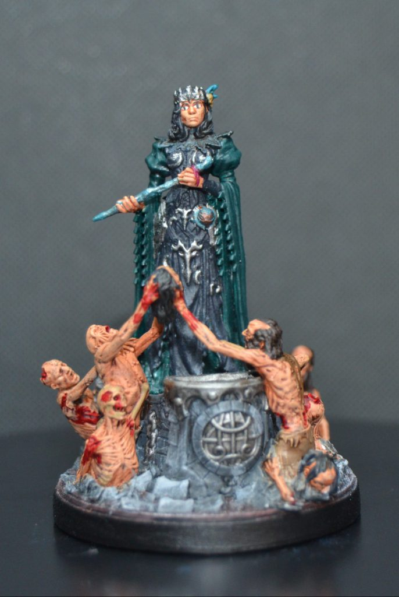
Countess Morrida Umberland - Painted by Carly - Insta: the_iron_forestCountess Morrida Umberland - Legion of the Fallen & the Conclave of the Spheres
Within the halls of Epitaph, a library of the dead, resides a woman betrayed by her family; Morrida. She had little skill in necromancy, and was estranged from the traditions of her family, so was sentenced to a life amongst the books. But with the bookcases was knowledge from the long dead, which Morrida learnt to master after honeyed words from a Lord, and the torturous will of a reanimated corpse. Wanting to share her knowledge of the necromantic power, Anush-Vah with the Lord Vorendal, she was scolded by the reanimated corpse Akriphista. When she confronted the lord, he scared her face in a fit of rage. Once again, Morrida was betrayed.
Morrida journeyed to Conclave, to which she learnt their magic, Liastrum. Together with Anush-Vah, the two amgics allowed her to unlock the potential of an artifact: the Soul-Stitcher. On her return to her homeland with the Legacy, the Queen of the Dead offered her to take on the role of Queen once she had perished but Morrida refused, choosing to never be bound by others. She now resides in her own lands, with stitched corpses, and those who chose to leave the old ways behind.
The Soul-Stitcher was a long abandoned artifact that the Conclave held onto. Many tried to use the artifact only to become injured by their attempt to prove themselves worthy. This Legacy was crafted to counter the Curse of Death by finding a way to stitch together the soul to a body using Liastrum. Thus the wielder defies the curse to bring new creation to the world.
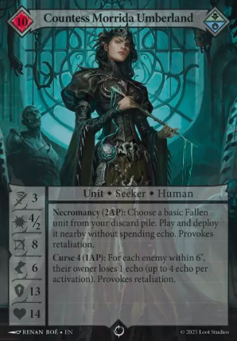
Morrida Umberland Rules - Loot StudiosMorrida’s Rules - Morrida needs protection due to her low health and defence, but makes up for it with a decent range for her attack. She brings a curse ability which can cost the opposition echo, whilst having an ability which can bring back a defeated Fallen unit from your discard pile. Morrida is all about getting the most of your units, whilst sucking the life out of the opponent either by swarming them with bodies or draining them of resources.
The Soul-Stitcher - If you defeat an enemy, then the Soul-Stitcher allows you to bring a basic or elite unit from your deck into your hand, reinforcing the swarm theme. You can also discard a Fallen unit from your hand to give a unit on the table an ability from the discarded unit. It is a way to get around echo and get a new effect out there. Plus you can bring that card back with Morrida.
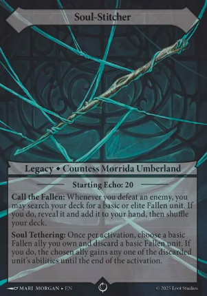
Soul-Stitcher Rules - Loot Studios Unique Cards - The Umberland Shade is hard to pin down with it being able to move through any obstacle, and hard to injure with any graze doing no damage to it at all. This can be an annoying unit to face on the table whilst holding back a horde of bodies. Disembody is a spell that continues this untouchable idea, turning a hit into a graze whilst giving a free move. Spell Plunder allows you to use a spell from your opponents discard pile and then banish it, which can be a ruthless play against the Conclave who want to reuse those spells.Useful Cards - Stitched Corpses are cheap basic bodies for Morrida to use, perfect for her style of play. Anush-Vah Disciple has Curse just like Morrida, so you could do a lot of Curses to shut down the resources of the opponent, and this is the same for the Soulwhisperer. Thrice Murdered is like a super shade, so you could end up running multiple shades all difficult to chip away at. Corpse Explosion could be a great way to deal a big chunk of damage for a cheap basic unit, whilst Back For More can help you keep your numbers up for the swarm.
If you want to swarm the opposition with the undead whilst stealing away their resources, then you should seek out Countess Morrida Umberland.
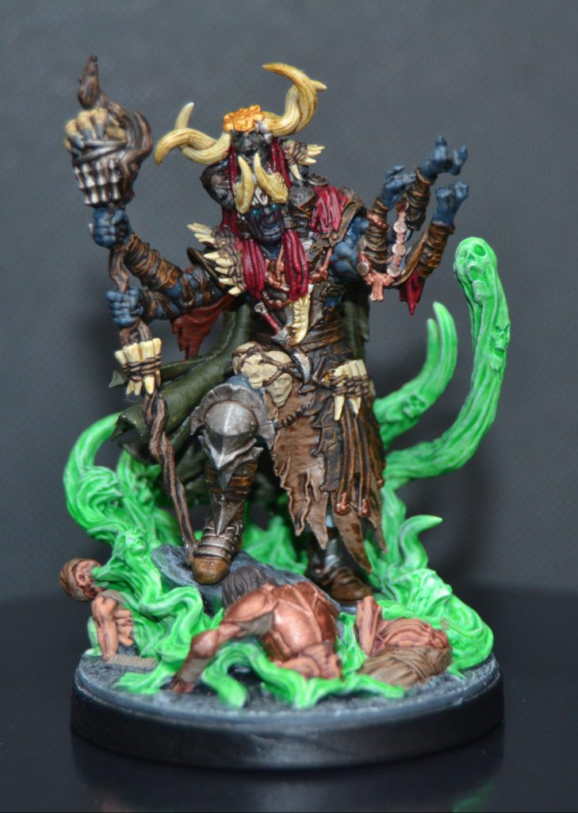
In'Gor, the Spiritbound - Painted by Carly - Insta: the_iron_forestIn’Gor the Spiritbound - Primal Blood & the Legion of the Fallen
In’Gor is the heir of the In’Grok Dynasty, which is one of the leading Kiths of the Primal Blood. However, their high standing began to crumble away with the arrival of Thundersteps. Most turned to follow the cyclops, so In’gor was raised to be the true heir due to his heritage. His destiny was to take up his family’s legacy and slay Thundersteps, however In’gor was not born to be a mighty warrior with his frail body conflicting with the culture favouring strength. But In’Gor would not be held back.
To gain power and follow their destiny In’gor became a shaman, choosing to master the magic of Ymiris to take down Thundersteps. Although, it wouldn’t be enough to face him alone. This desire to overcome the cyclops resulted in him stealing his father’s legacy and performing forbidden rituals to access the magic of the undead. In’Gor had to perform this ritual within the depths of the Malediction, and pulled forth the souls of Legion soldiers frozen in time. He consumed them all to become strong enough to face Thundersteps.
In front of several Primal Blood Kiths, In’gor challenged Thundersteps for glory. The fight lasted hours, and when In’gor gained the upper hand a debt had to be paid. Not once did In’Gor question what it would have cost him to tap into the magic of the dead, and that crept up on him resulting in his loss of control over the magic. This saw him fail in his challenge, and learn that he was possessed by the spirits he consumed which were desperate to claim his body for their own.
Desperate to unite the Kiths and defeat Thundersteps, In’Gor now travels to find a way to overcome his possessors, all the while their whispers torment his declining body every step of the way. The shaman will sacrifice all who follow him for this goal, as they are merely stepping stones in the road to conquering his tormentors. If they die, then so be it, but they will go down swinging if so. The Malediction holds the key to his freedom, and he will drag his frail body to the end.
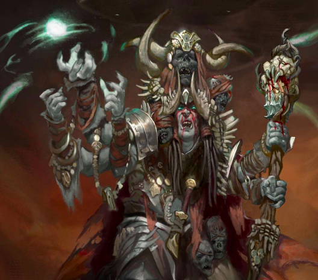
In'Gor, the Spiritbound - Loot Studios - Lore PrimerEffigy of Chaos, was a legacy passed down through the ages that its form has become legend. Some stories speak of it as a warhammer, others as a staff, but now it is a part of the In’Grok dynasty and in the hands of In’Gor. In’Gor swore to the shamans that taught him to usher in a new era for the Primal Blood using this legacy now dubbed the Effigy of Chaos.
The legacy is a versatile artifact that bends to whatever the bearer needs for their goals, at its core the power it wields can change body and soul for the wielder’s gain. Since the shamans and berserkers split from the arrival of Thundersteps, the legacy’s potential has been clouded. However, it still empowers a user’s body or soul which reflects the teachings of the founder of the Primal Blood. If In’Gor can realise the true power of the Effigy, then he will overcome his weaknesses and arise as a warrior-prophet.
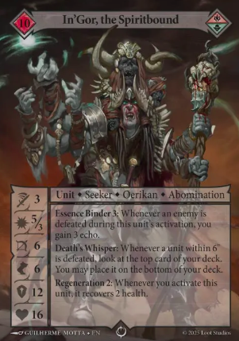
In'Gor Rules - Loot StudiosIn’gor’s Rules - Strength from death. If you defeat an enemy model in In’gor’s activation, you gain Echo, but also whenever any unit is defeated within 6” he can look at the top card of your deck and choose to put it on the bottom. Gaining more resources, whilst improving the quality of your card draw, is super strong for the game. He doesn’t have much else going for him other than some Regeneration, a decent ranged attack, and better health than most. You want to set him up to knock down a few pins so that you can keep the flow of resources going.
Effigy of Chaos - Tying into In’gor’s rule of looking at the top card of your deck, the Legacy allows you to draw the top card of your deck when a friendly model enters the discard pile. If it is a spell you can play it, otherwise you would discard it. In addition, whenever you discard a card you gain Echo. With this Legacy you increase the flow of your resources even more, whilst bringing some more spells out to the field. You want cheap units that can deal some damage, die, generate Echo from their death, so you can bring the higher quality units out with ease.
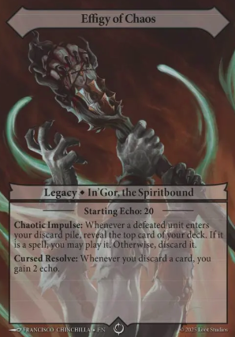
Effigy of Chaos Rules - Loot Studios Unique Cards - The Cursehost Boar is a perfect unit to fuel the abilities of In’gor. It is cheap, fast, and when it dies it does an explosion of damage. A must add to any In’gor deck! Chaotic Bargain allows you to discard a card and draw a card or just draw two cards, whilst Ravenous Swarm is a channel spell that allows you to deal damage, but if one of your models has died you can play it as a swift.Useful Cards - Tarok Beasts work the same way as the Boars since they are cheap and can fuel In’gor’s abilities nicely. Other units you should consider are the expensive ones since you should have more Echo than other Seekers to use them. Sek’Takar from Liena’s deck is a great model for In’gor since his Bombardment rule could damage and kill the Boars causing a chain reaction of damage, whilst yet again fueling In’gor.
With all this extra Echo, the Woe-Caster Shaman might be a great pick since this does more damage when you use spells to damage the enemy. Primal Blood has plenty of damaging spells, and you will be able to get these often with Echo to play them in an In’gor deck. If you’re a fan of rushing the enemy with low quality units whilst you build up stronger forces, then pick up in’gor.
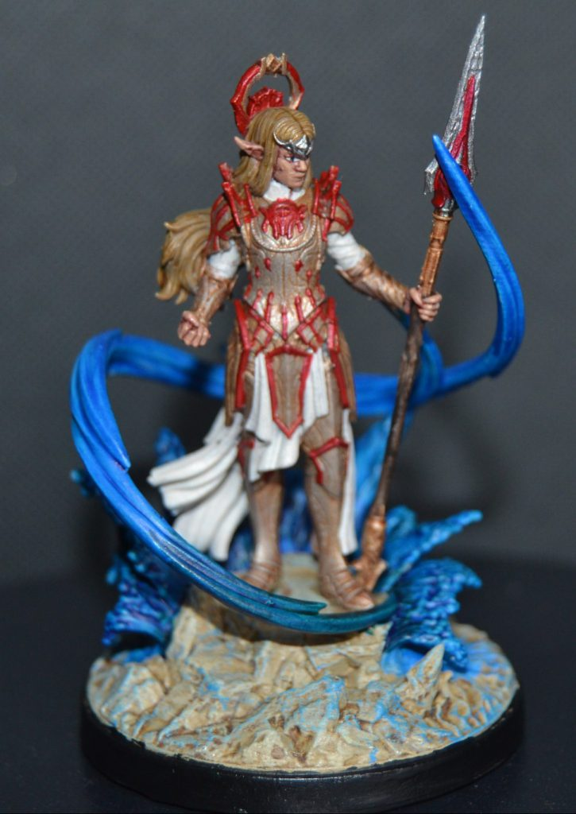
Londriel, Spellwarden - Painted by Carly - Insta: the_iron_forestLondriel, Spellwarden - Conclave of the Spheres & Order of the Shattered Throne
Londriel has been around since the fall of the Everlasting. For thousands of years she has been sealed away by the magic of a legacy. She was just a child, enclosed by blue amber, when an expeditionary force from the Order found her in the Malediction 800 years prior to the current story. For seven centuries she was enshrined as a saint, until a mage from the Conclave chance upon her, recognising the blue of the amber as their magic Liastrum, and shattering it, freeing the child from her eternal slumber.
Growing up in the Order’s territory influenced Londriel into believing in a higher purpose to prevent the reckless use of magic that she believes caused the world to fall into chaos, used by both the Everlasting gods and their followers. She chooses to walk a path to become a warden who wields great power for justice. But she was of the Conclave’s people known as Erisyr, and her use of Liastrum was misjudged within the Order’s culture. Thus she left for the Conclave to study under their rule.
Londriel became an apprentice to Polinore, and then became a master of Liastrum. But she was too pure of heart towards the goodness of actions, and the Conclave is a bee’s nest of political intrigue, thus she called out their corruption with the reckless use of the Liastrum, learning that it can damage the fabric of reality. Both Polinore and herself were cast down from their standing, Polinore becoming a lesser master, and Londriel exiled.
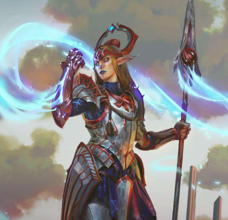
Londriel, Spellwarden - Loot Studios - Lore PrimerDespite her love for both the Order and the Conclave, Londriels sees the flaws in both. The Order is too ruthless in their religious zeal, abandoning all sense for blind faith. The Conclave is drowning in greed for power, and pushes their magic too far that it is breaking their very bodies. Londriel fears a second fall, and the steps that brought it are happening again. Londriel did not falter from becoming an outcast. Instead she moves with purpose towards the Malediction, to discover her past, and learn of a way to safeguard the continent from those who abuse its magic. As one of the few (if not then the only) people to witness what great cataclysm can be caused by those who mishandle magic, she sees herself as the guardian of a world filled with reckless fools that could not comprehend what she witnessed; what was lost.
Ark of Lamentation saved Londriel during the fall, but also for centuries it safeguarded her until it was discovered by the Order and taken to their holy city. From there the blue amber holding Londriel and the ark were lauded over as a shrine. Nothing could break the amber, until a Conclave mage visited the holy city and tried to steal the Ark after recognising the blue aber was hardened Liastrum.After a failed theft from the mage, the Ark shattered the amber, freeing itself and Londriel. The Ark had already bonded with Londriel, and any attempt to separate the two ended miserably. The Ark yearned to protect her, and effected all magic surrounding it, siphoning the magic. The soul that was encased in the artifact desired preservation of the world against magic, and the perfect wielder is Londriel who reflects that same desire effortlessly.
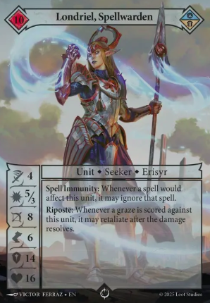
Londriel Rules - Loot StudiosLondriel’s Rules - Londriel cannot be affected by spells with her Spell Immunity. This is a huge deal since we have talked about multiple Seekers being able to dish out a lot of spell damage throughout their playstyle. To dash further salt into the wound, she also has Riposte which allows her to retaliate if a graze is ever scored against her. So if you do miss an attack, she will then attack you back. A decent defensive stat and an alright combat stat makes her a frustrating Seeker to fight against as she just has no time for your tricks.
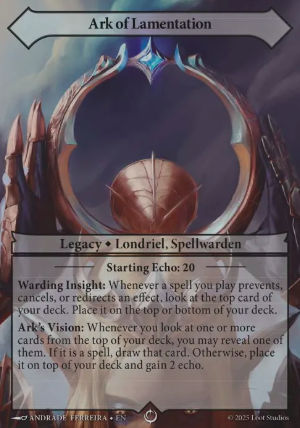
Ark of Lamentation Rules - Loot StudiosArk of Lamentation - Whenever a spell prevents, cancels, or redirects an effect, you can look at the top card of your deck and either place it on the top or the bottom. Londriel is a dual faction Seeker, so she can bring the spell cards from the Order of the Shattered Throne that prevent damage. It isn’t enough that you can’t play spells on her, but she can block you, whilst finding her own tricks. Additionally, when you do look at a card from your deck, you can reveal it. If it is a spell you can draw it, if not then you put it back, and you gain Echo. This is a different style of control to Sigrith, where you control the spells being played rather than the field.
Unique Cards - Lodriel has a unique unit which is a centaur construct. This sports her rule of Riposte so make sure you hit it when you attack or you will take a lance to the face. On top of this, when a spell is placed it does more damage on its activation. It is a cool all-round unit to help Londriel, but it is the unique spells that you need to be concerned with. Resonant Guard prevents damage equal to the spell cards in your discard pile, so you could end up blocking a stupid amount of damage with this card, save it for a big swing! Reversion can cancel an effect of a card, but that card returns to the player’s hand instead of being stopped. There is a higher quality version of this for Conclave that stops the effect, and sends the card to the discard.Useful Cards - Combining the constructs of the Conclave like the Spellbound, with the defensive buffs and spells of the Order, can create an impenetrable wall to chew through. From the Shieldmage to the Gateway Guardian, your units will resist damage, choose where to put it, but only if it can break through your spells. Londriel is a very tough cookie to crack, so be wary of ways that the enemy can reposition you with Knockback or Push. If you want a Seeker that does not have time for the enemy’s tricks, then bring Londriel to shut them down.
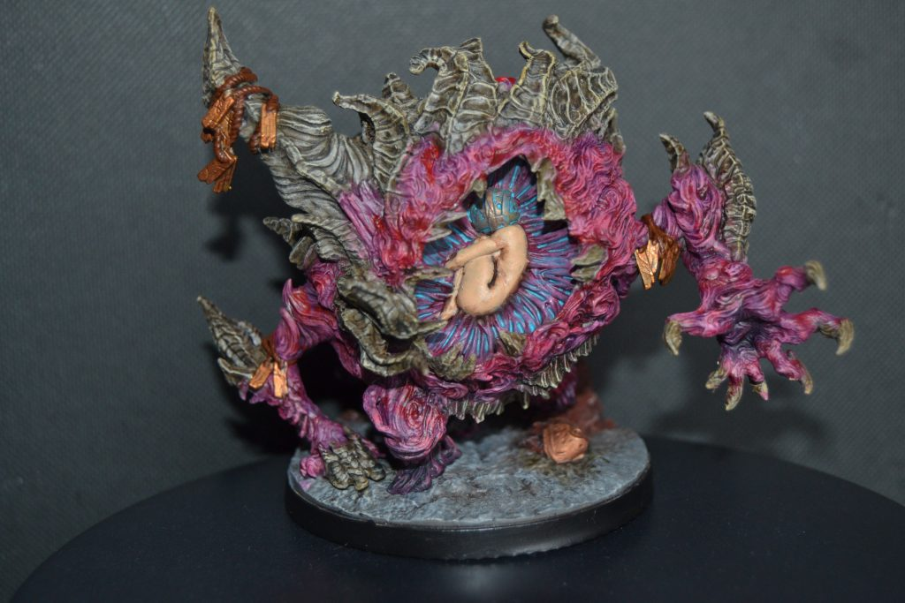
Liena, Who Dreams - Painted by Carly - Insta: the_iron_forestLiena, Who Dreams - Conclave of the Spheres & Primal Blood
Liena started off as an apprentice of the Conclave. She chose to sacrifice her own good nature to align with that of the Conclave’s values. This was all done for what she had witnessed of those who believed in generosity or humble teaching within the Conclave. She would not be led astray into some hell-hole or another just for someone else to gain from her sacrifice.
The path to avoiding this will be the one that many high standing members of the Conclave have walked and continue to do so; accumulating power. The desire grew beyond becoming a master of Liastrum, but a Nexi, one of unquestionable and uncontested power. Eventually she made her way into accessing a hidden vault hiding a number of Legacies from the rest of the Conclave. Within the vault there was an artifact that could produce Liastrum on its own. She needed this artifact, but it could be taken from her so easily, she needed a way to have its power permanently.
Liena mastered the Legacy by fusing it with her body and becoming a host to it as a living Legacy. Now she wouldn’t need to beg for Liastrum from the Conclave, she had her own within her veins. But this was unstable, and grew wilder the more she grew in strength, and like all Conclave members at some point, she overlooked the corrupting influence of the magic. Furthermore, she spelled her own doom since it could not be removed, resulting in her life now being on the clock.
Liena researched a way to cleanse Liastrum using techniques of the Primal Blood. This method lacked understanding, but she learnt that some warriors were able to live on through a magic that would encase them in clay and flesh. So she made a deal with the shamans and entered a deep meditation within the clay that would turn her into a golem, and unbeknownst to her she would be under the control of the shamans just like those in the primal blood who chose this path.
However, this was not to be. Kar-Mamok was what became Liena. A prison of flesh under her own control. It did not solve the problem of the Liastrum corruption, but halted its progress. Now she dreams of a way of solving this curse, and wanders the Malediction in search of that salvation.
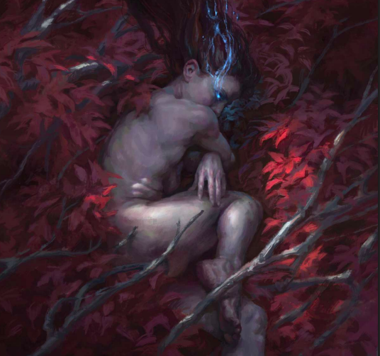
Liena, Who Dreams - Loot Studios - Lore PrimerKar-Mamok was possible thanks to the magical tradition of the Primal Blood. They wield a primordial magic from the All-Mother, the very magic that flows through the whole world. They can wield this power to save their most injured by sculpting them into golems clay and the dead. The only problem is that the souls encased in the golems are servants to those that molded them. The shaman hoped as much when striking a deal with Liena, believing they will gain unlimited access to Liastrum in doing so.
Instead the Liastrum preserved Liena’s body and soul from fusing with the primordial magic, providing her with full control over the golem and mind. This did cause to fall into a deep slumber, where she is split between a dreamscape and the real world. The more she swings into the dreams, the more Kar-Mamok takes a will of its own in rebellion. The Primal Blood say this should not be possible, as they should be shells.
The Liastrum that seeps from Liena and Kar-Mamok attracts mages from the world as they can access her power freely as long as they aid her in her desires. For Liena would do anything to regain control over her own fate.
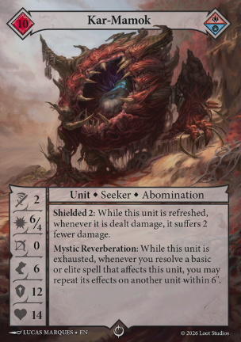
Kar-Mamok Rules - Loot StudiosKar-Mamok’s Rules - When Kar-Mamok has not activated you reduce damage done to her, but when she has activated and you cast a bronze or silver spell on her, another model within 6” is also affected. Kar-Mamok is a share the love sort of Seeker. Although, she sports the frailness of the Primal Blood and the damage to boot. You will have to be careful with how you use her on the table.
Liena, Who Dreams - When you defeat an enemy, you can play a spell and reduce its cost by two. Couple this with the Conclave terrain and you could reduce it by three. This could be quite strong for getting many of the spells in your deck out for free, leaving you to spend Echo on units. On top of this, all your non-Seeker units gain Spell Strike, which means they do more damage when a spell has been played. This is an aggro-spell version of the Primal Blood.
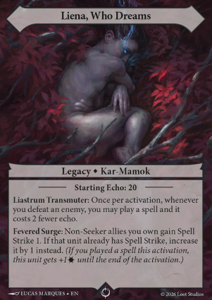
Liena, Who Dreams Rules - Loot Studios Unique Cards - Uncaged Experiment is a cheap body to disrupt the enemy, but unlike the other cheap Spellbound creatures it can do some decent damage, especially with Spell Strike activated. You can also use it with Nariev, who can search for it in your deck and play it. Trample Through is a great spell for dealing some damage when a unit shifts through enemy units, and Arcane Mirroring can be incredible for action momentum, as it allows you to perform a one action point ability that the enemy just did.Useful Cards - The Conclave spells don’t utilise Kar-Mamok’s ability as much as the Primal Blood spells. There are a few movement spells that can be triggered on multiple units, but really you should be using the Primal Blood spells for this ability to work. Taking extra actions, doing some more attacks, or evening unactivating a unit that has already gone, the Primal Blood spells are perfect for Liena’s deck.
The Spellbound Devourer is a perfect addition to the force since it already does extra damage in melee and can gain you some Echo if it defeats an enemy. The Woe-Caster Shaman has Witchcraft which would double up with Spell Strike for more damage when a spell is played to make a nasty unit. Liena’s deck can very quickly overwhelm the opponent so if you want to play a hard hitting force through spell management then seek her out.
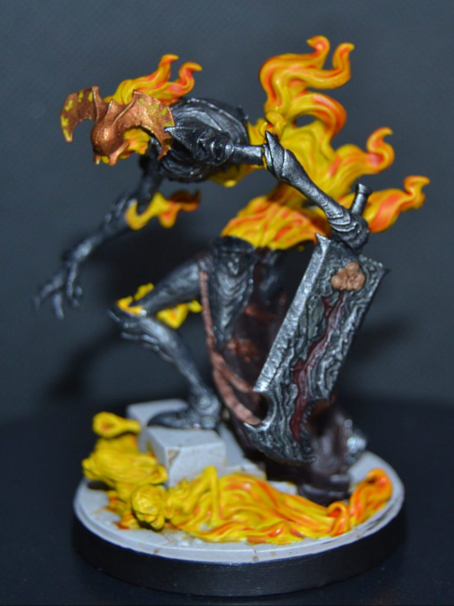
Griza, the Lingering Wound - Painted by Carly - Insta: the_iron_forestGriza, Lingering Wound - Order of the Shattered Throne & Legion of the Fallen
Within the territories of the Legion of the Fallen, spirits of the fallen can coalesce and rise as a single being if they share the same path to the grave. These beings are known as a Tragedy. Tortured and experimented soldiers were at the heart of a necromantic experiment to unlock the powers of a legacy known as Ihreniv. A crazed knight of the Order of the Shattered Throne was the successful experiment that died wielding the artifact, they returned as a revenant and became the core of a new Tragedy called Griza.
The necromancers were torn apart by Griza, as it began its quest to fulfill the oaths of those that had died in its creation. As a relentless power that can command the spirits around them, Griza is a terror that wanders the battlefields of the Malediction, either for his own quest or that of others that have bargained with them. He is often seen as the divine herald of the Everlasting, but born of both the Legion’s and Order’s magic. This makes him a contradiction to each faction’s cultures which both would see him felled to protect their beliefs.
Griza is a being of many lost souls in one. A single minded annihilator that needs not seek more power, for they already have it. Deep down however, there is an instinctive behaviour drawing Griza into the Malediction. Within the cursed storm is a Vestige of an Everlasting, that if recovered could awaken an Everlasting bringing great change to the world as they know it. This is their task to complete, their quest to fulfill, their oath to achieve.
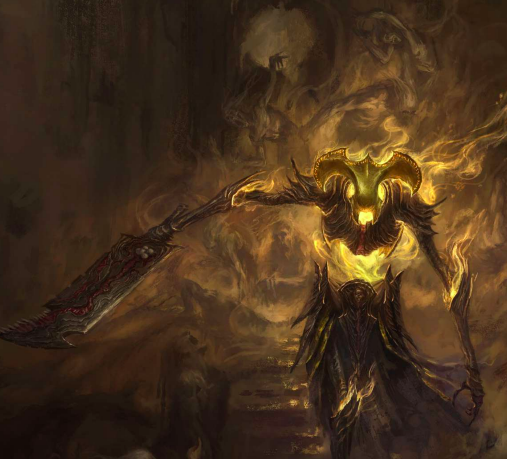
Griza, the Lingering Wound - Loot Studios - Lore PrimerIhreniv, The Helm of Oaths Today, is the Legacy that the Tragedy Griza was formed from, but is also the artifact which grants control over spirits. Ihreniv was a soldier of stalwart faith of the Order. He devoted everything to the Triumvirate that they bestowed upon him a relic that was a golden helm. It caused him to become blind to the world’s blights so that he could focus on his faith. But he was not blind to the sting of grief, for when his greatest love perished he begged the Triumvirate to bring her back. They refused. So Ihreniv turned from them to find a way to return her.
He found a way to bring her back within the lands of the Legion, but his loyalty and service would switch to the Queen of the Dead. When this news reached the Triumvirate, they sent their personal guard to capture him and kill the returned partner, and they succeeded. Ihreniv’s sundered body was returned to the Trimumvirate, and they stripped everything but his loyalty from his soul, and sealed it within the relic. The story then served as a warning to all those who would choose to walk the renegade path.
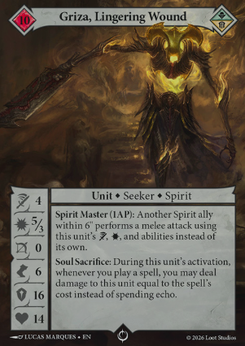
Griza Rules - Loot StudiosGriza’s Rules - Griza is all about spirits. He has an ability that costs one action point to allow another spirit within 6” to make a melee attack using Griza’s attack and damage stat. So watch out! Griza can enforce their will anywhere. Griza can also take damage to himself equal to the cost of a spell in exchange for paying the Echo. This could be a very useful ability in dire circumstances, and if you can find a way to heal (such as with the Order’s spells and units) you could start playing spells for free.
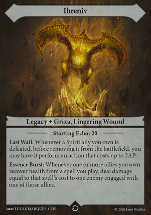
Ihreniv Rules - Loot StudiosIhreniv - Keeping the theme of being all about spirits. Whenever a spirit would die, it can perform an action worth up to two action points before being removed. So calculate the potential of a final swing when you are going to kill one. Another ability applies to when you heal a unit, such as Griza after he takes damage to play a spell without paying for it. When you heal you may deal damage equal to the amount you healed to an enemy the model is engaged with. Griza wants to play on the edge of death; getting stuck into the fight, healing whilst doing more damage, and if a spirit dies then you can take one more punch before they go.
Unique Cards - Griza has a unique unit which is a large spirit hand. Griza can attack through this unit, which is the main draw to the card. But when it is defeated both players discard a card. Somber Surrender allows you to manipulate the damage on the field by having an ally take any amount of damage to heal to another, this could trigger a defeat of a spirit that is about to die so that you can give it a final swing. Or you could pull your higher quality units out of a dire situation by sacrificing a lower quality unit. Dilemma of Fate allows you to either heal a unit, or deal damage to two enemies. A very strong card that adds to the bloated amount of healing the deck can accomplish.Useful Cards - Griza wants spirits from the Legion deck to work alongside healing units from the Order deck. Spirits like the Tragedy of the Wronged and the Thrice Murdered can heal from attacking, so work perfectly with a tough to kill Griza deck. The Valcarist Priest, Revalis Pentinent, and the Herald of Salvation, are all perfect Order units to help heal allies. Obviously the Order spells are going to help for more healing and prevention of damage, but the Legion spells can help debuff the enemy by limiting actions. Griza can be an annoying force to face with hard it will be to make a dent in the force.
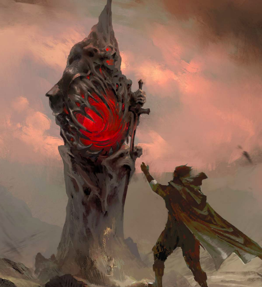
Seek the Malediction - Loot Studios - Lore PrimerWe have now gone over every Seeker in the game of Malediction to date. I hope this has given you a brief idea of what each Seeker can do, alongside some hints at where to begin with building a force to delve into the Malediction. If you have any other hints and ideas then do share this with the community within the Malediction discord server! No matter who you choose you must decide if you dare to delve into the Malediction.
Have any questions or feedback? Drop us a note in the comments below or email us at contact@tabletopbattles.com. Want articles like this linked in your inbox every Monday morning? Sign up for our newsletter. And don't forget that you can support us on Patreon for backer rewards like early video content, Administratum access, an ad-free experience on our website, and subscriber-only content covering competitive Warhammer 40K!Originally published on Goonhammer.


Leave a Comment